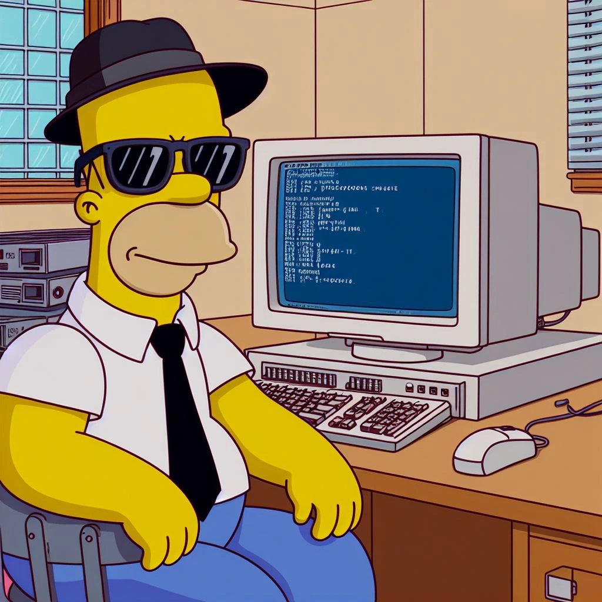

Üdvözöllek a kezdőlapon!
Ennek a weboldalnak a célja bemutatni a Miskolci Egyetem Gépészmérnöki és Informatikai Karának 3 oktatott tárgyát. A tárgyak a következők:
Ugyanezek a tárgyak megtalálhatóak a képernyő tetején elhelyezkedő menüben is. Hogy pontosan hogyan is készítettem el ezt a weboldalt, arról bővebben a Github-on lehet olvasni a Jegyzőkönyvben.
Irány az első tantárgy

0:00 / 0:00